Do desenho
ao elemento
Visualize como a representação técnica corresponde à estrutura.
DA PLANTA À OBRA
Um guia visual que conecta desenhos estruturais, elementos em 3D e etapas de execução de forma clara e organizada.
Acesso ao material digital por R$ 12,97.
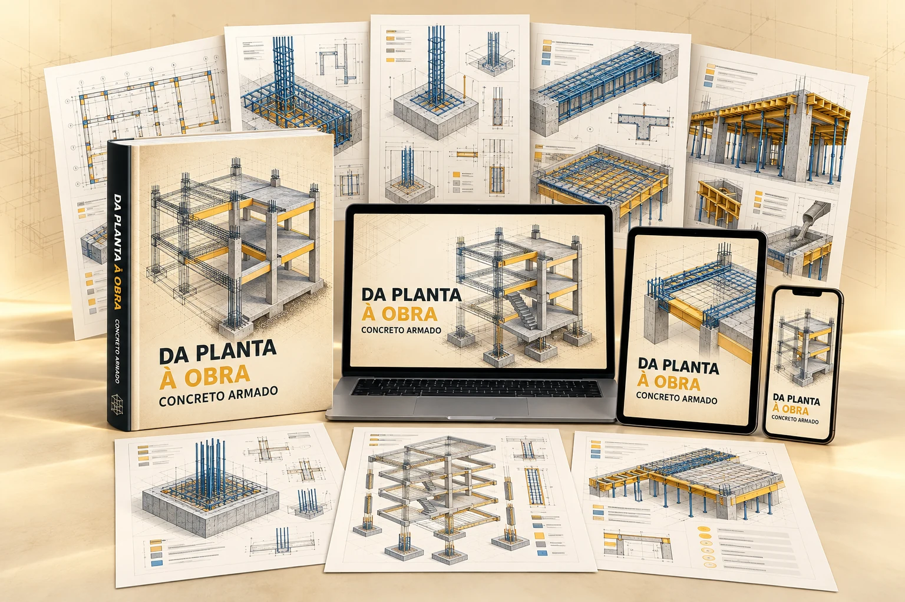
01 / UM NOVO JEITO DE ENXERGAR
Quando planta, corte, detalhamento e execução aparecem separados, é fácil perder a relação entre o desenho e o elemento construído. O guia organiza essas informações lado a lado para facilitar a leitura e tornar a observação da obra mais consciente.
Visualize como a representação técnica corresponde à estrutura.
Reconheça disposições usuais e entenda o que cada detalhe procura comunicar.
Acompanhe pontos de atenção em fôrmas, armaduras, instalações, concretagem, cura e registro.
02 / VEJA O MATERIAL POR DENTRO
Páginas visuais combinam desenhos, modelos em 3D, sequências e observações para tornar relações técnicas mais fáceis de identificar.
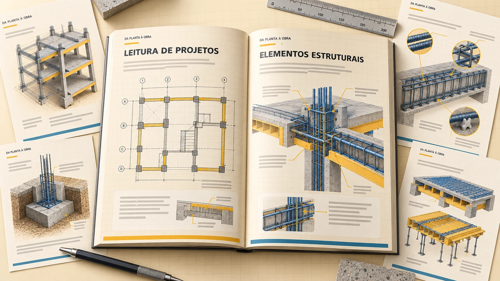
03 / O QUE VOCÊ VAI ENCONTRAR
Seis módulos para encontrar cada assunto com facilidade e conectar os detalhes ao conjunto da estrutura.
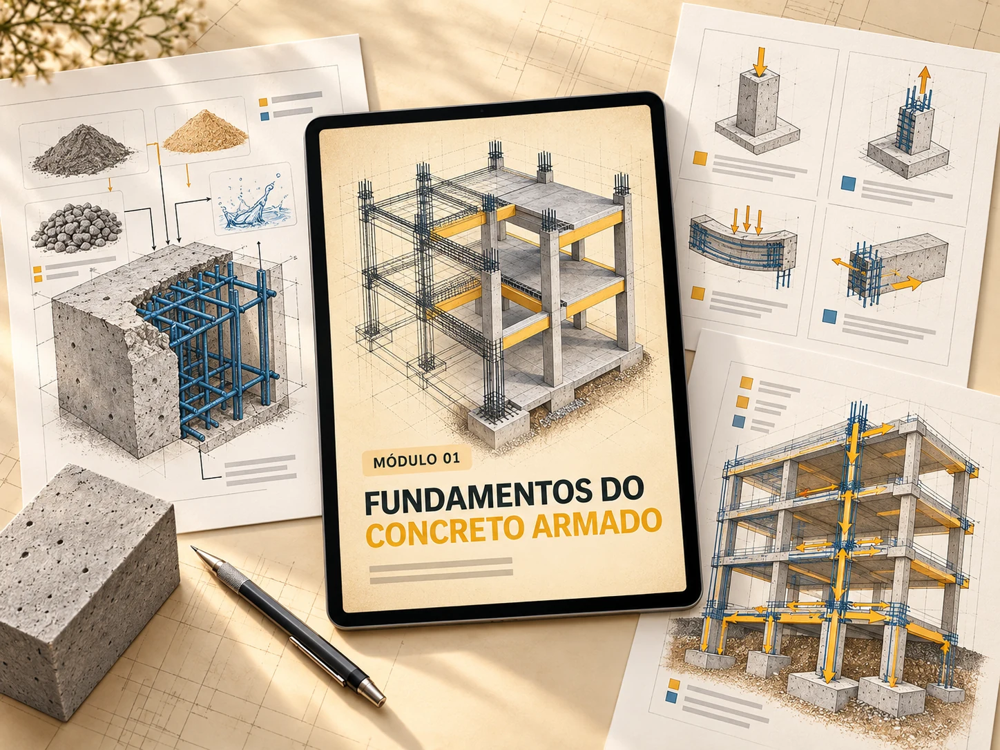
MÓDULO 01
Compreenda a lógica do sistema estrutural e a atuação conjunta de concreto e aço.
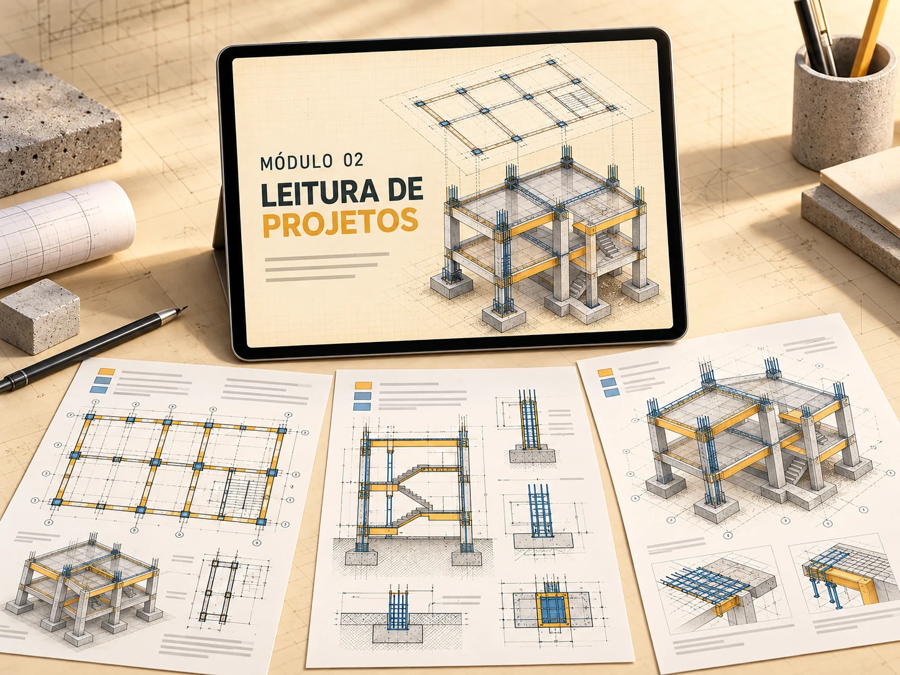
MÓDULO 02
Aprenda a localizar informações e relacionar plantas, cortes, eixos e detalhes.
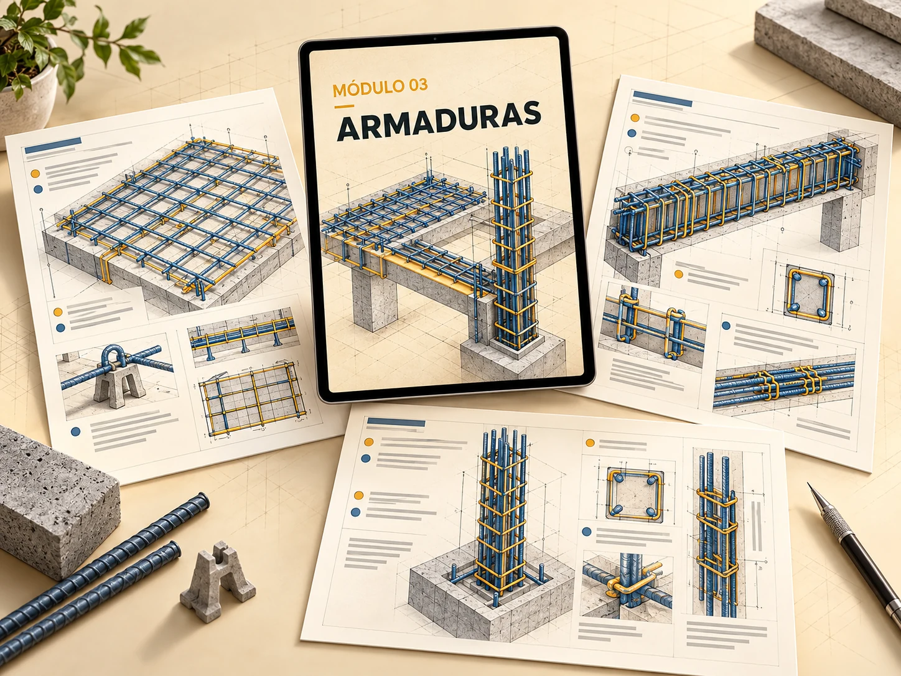
MÓDULO 03
Reconheça a representação das barras e os principais pontos de leitura em detalhamentos.
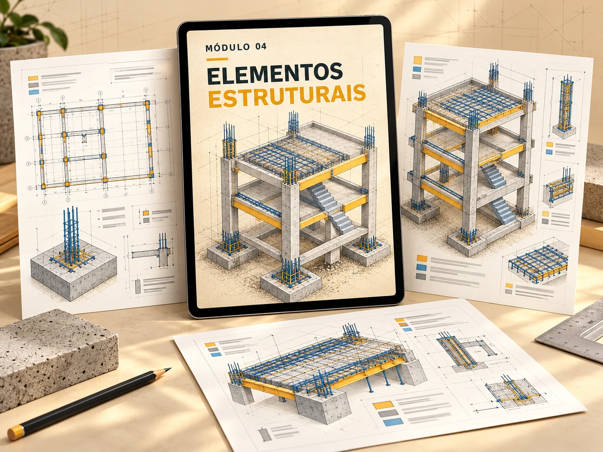
MÓDULO 04
Veja como lajes, vigas, pilares e fundações se conectam no conjunto da estrutura.
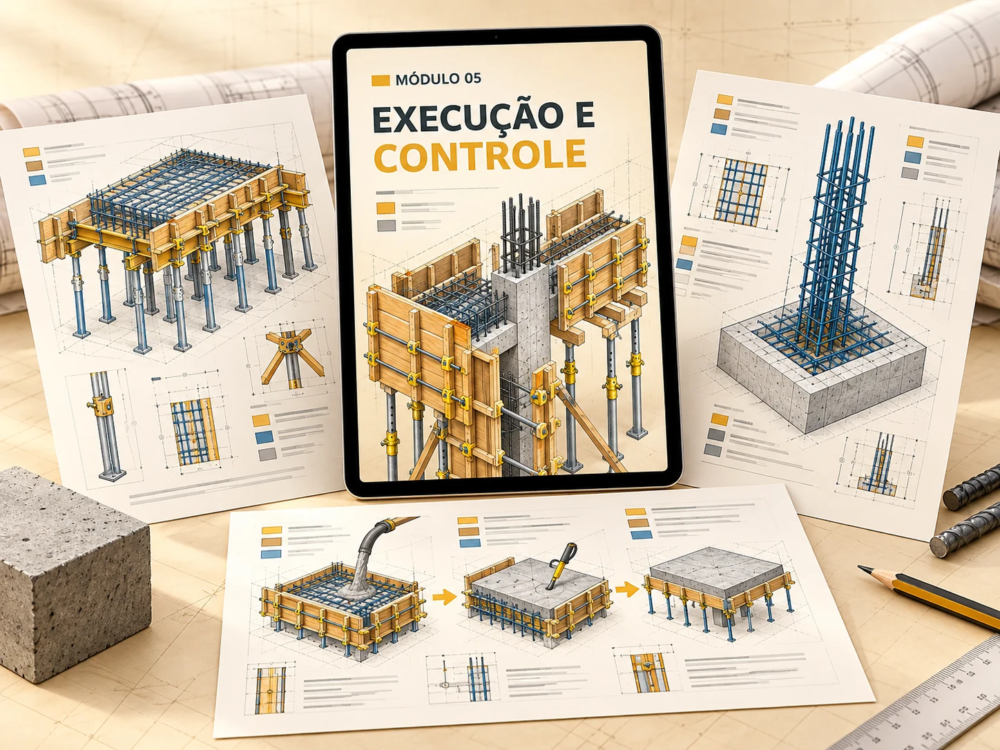
MÓDULO 05
Organize a observação das etapas que antecedem e acompanham a concretagem.
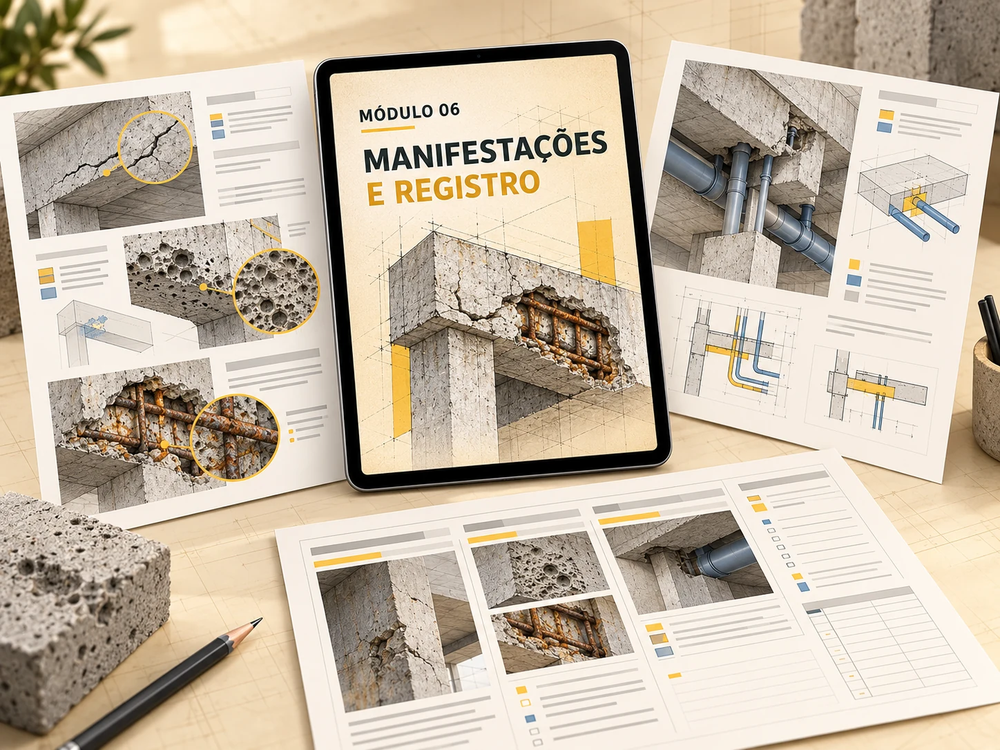
MÓDULO 06
Aprenda a observar sinais visíveis e documentar ocorrências de forma objetiva.
Conteúdo educativo. O material não substitui projeto estrutural, normas aplicáveis, inspeção especializada ou responsabilidade técnica.
Guia visual + 3 bônus por R$ 12,97.
04 / DO ESTUDO À OBSERVAÇÃO
Um material para voltar, consultar e fazer novas conexões em cada etapa do aprendizado.
05 / ACOMPANHAM O SEU GUIA
Os bônus complementam o guia com organização, registro e estimativas geométricas.
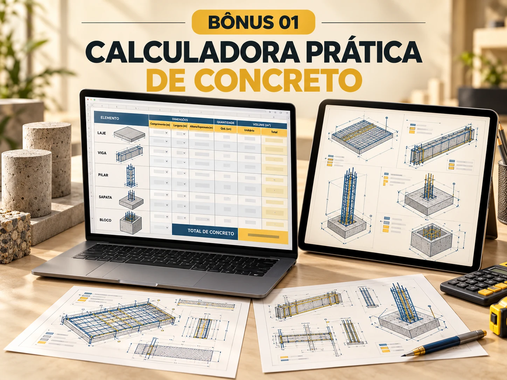
Planilha automática para estimar volumes geométricos de lajes, vigas, pilares, sapatas e blocos, com campos por elemento e resumo total.
Estimativa geométrica. Não substitui orçamento, projeto, levantamento executivo ou validação profissional.
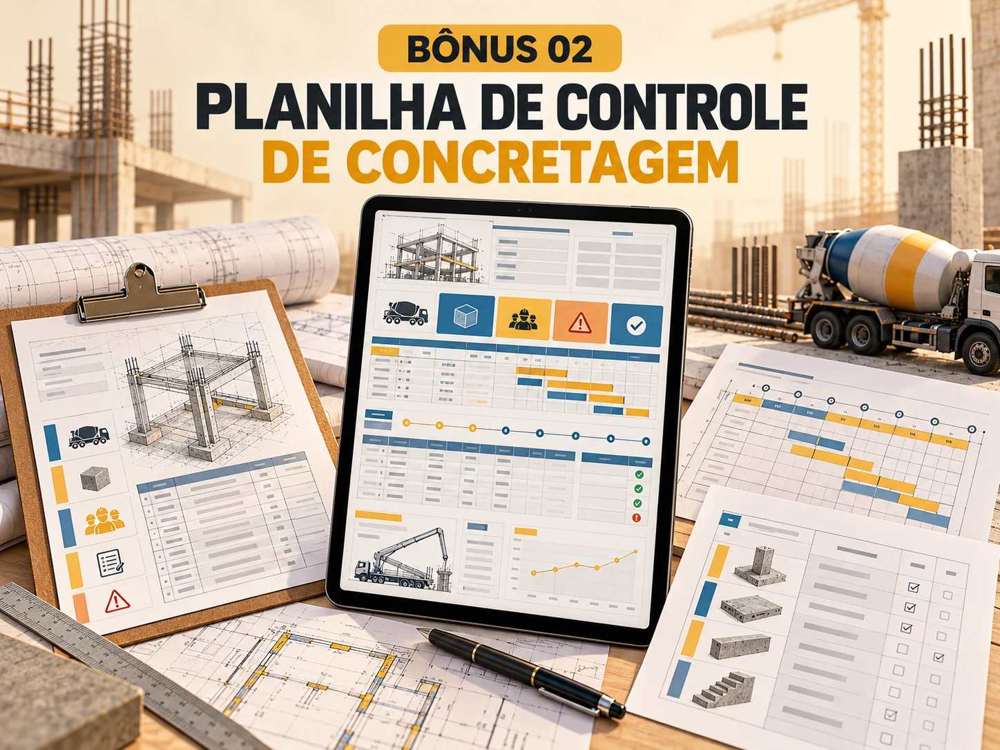
Controle por elemento estrutural: data, fornecedor, volume, horários, identificação do concreto, equipe, ocorrências, registros e situação da liberação.
Informações organizadas em um só lugar para acompanhar cada registro.
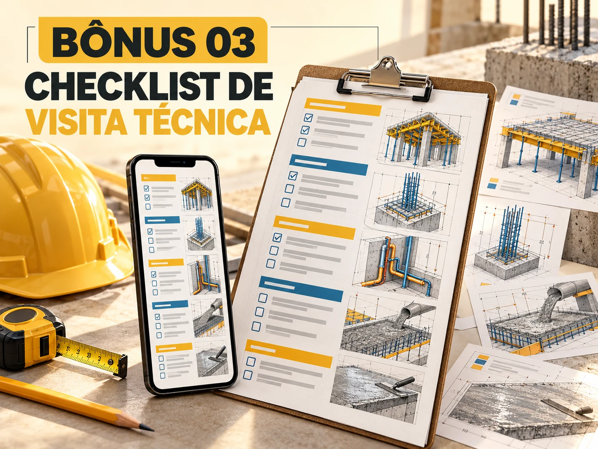
Roteiro para observar documentos, locação, fôrmas, armaduras, instalações, concretagem, cura e manifestações visíveis.
Versão A4 e versão compacta para celular ou impressão.
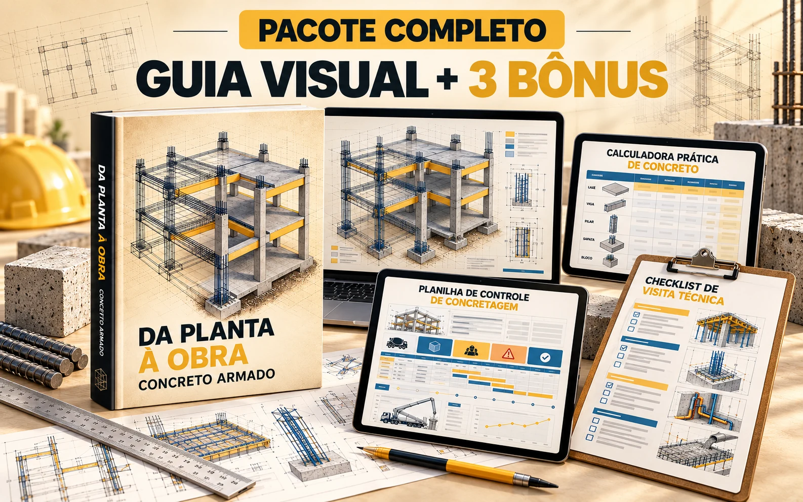
SEU PRÓXIMO PASSO
Material digital • Guia visual + 3 bônus
06 / PARA QUEM É
07 / ANTES DE COMEÇAR
Conheça o foco do guia e das ferramentas que acompanham o material.
Sim. A organização parte de fundamentos e usa recursos visuais para facilitar conexões entre desenho, elemento e etapa de obra.
Não. O foco é leitura, reconhecimento de elementos, observação de etapas e organização de registros.
Não. Ela apoia estimativas geométricas iniciais e deve ser validada conforme o projeto e o contexto real.
Calculadora Prática de Concreto, Planilha de Controle de Concretagem e Checklist de Visita Técnica.
DA PLANTA À OBRA
Use um percurso visual e organizado para estudar concreto armado e observar a obra com mais método.
Guia visual + 3 bônus por R$ 12,97
QUERO ENTENDER CONCRETO ARMADOMaterial digital.